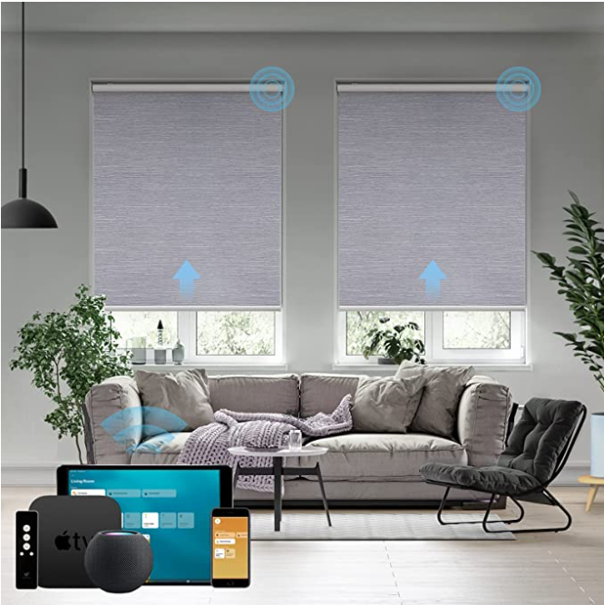
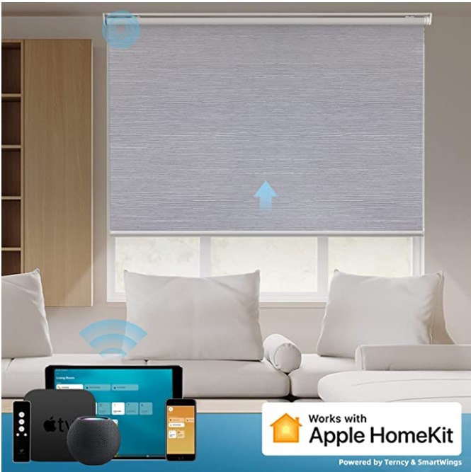
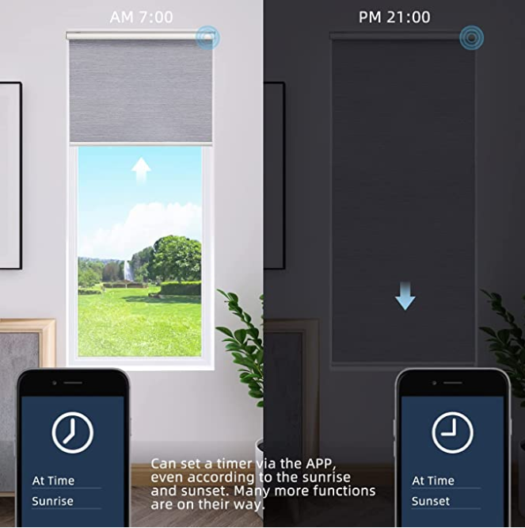

【Рад са HomeKit-ом】
SmartHome, приступ са било ког места када имате Homepod или Apple ТV (4ТH GEN или новији). Отворите и затворите ролетне тако што ћете питати Сири или помоћу апликације Apple Home када сте код куће. Креирајте распореде, тајмер за аутоматско отварање/затварање ролетне на основу ваших рутина.
【Доступних 19 величина и погодна инсталација】
Доступно је 19 величина моторизованих ваљака, већина вас може изабрати праву величину за своје прозоре. Уштедите дуго чекање за прилагођавање. Ове електричне нијансе имају специјално дизајнирану копчу, потребно је само праволинијско позиционирање и 4 завртња. Са ултра-ниским напоном, можете га сами саставити и нема потребе да плаћате додатне накнаде да га електричар инсталира.
【Вишеканални даљински】
Појединачна контрола и групна контрола могу се реализовати даљинским управљачем или апликацијом. Можете затворити или зауставити моторизоване ролетне у исто време (до 15 истовремено), контролисањем једне или више ролетне. Истовремено, можете подесити ролетне на било коју висину коју желите.
【Тих и моћан мотор】
Мотор ролетне је супер тих < 35dB са великим обртним моментом и максималним оптерећењем од 5KGS. Lin-ion пуњива батерија од 2200 mAh, може се пунити са USB типа C, мотор се може користити 4-6 месеци након потпуног пуњења. SmartWings нуди 24-месечну гаранцију на моторе и контроле. Било какво оштећење или квар мотора или команди у првој години, поправку или замену обезбеђујемо бесплатно.
【Паметна кућа】
SmartWings ролетне пружају модеран стил, приватност и лагану блокаду за миран сан. Не само да су ове нијансе одличне за спаваче, оне су такође идеалне за медијске собе јер ће затамнити собу и спречити одсјај сунца на вашим екранима. Бежични дизајн прилагођен вашем кућном окружењу, деци и кућним љубимцима.